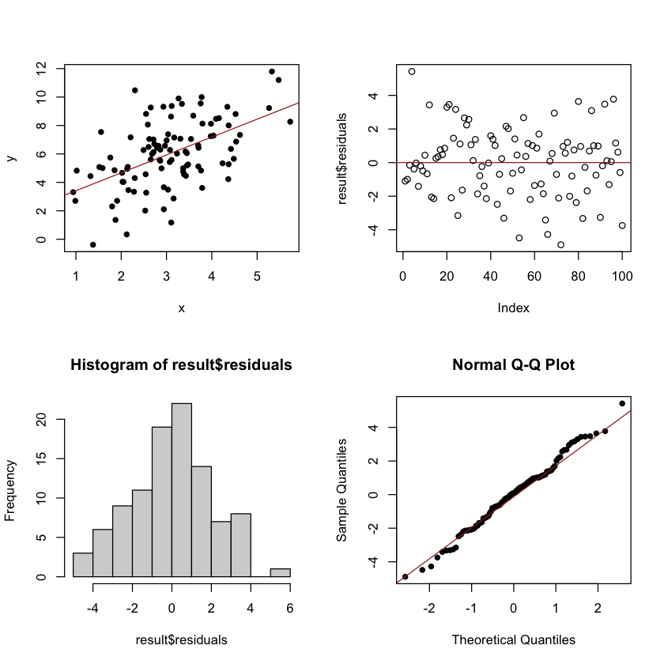

Lab 9: Linear regression
Contents
Lab 9: Linear regression#
Simple linear regression#
Simulating linear regression data#
x = rnorm(100, mean=3, sd=1)
error = rnorm(100, mean=0, sd=2)
y = 2.1+1.25*x+error
data=data.frame(cbind(x,y))
Fitting the linear regression model#
result = lm(data$y~data$x)
summary(result)
Call:
lm(formula = data$y ~ data$x)
Residuals:
Min 1Q Median 3Q Max
-4.5487 -1.2490 0.1897 0.9377 4.5396
Coefficients:
Estimate Std. Error t value Pr(>|t|)
(Intercept) 2.6431 0.5850 4.518 1.74e-05 ***
data$x 1.1260 0.1809 6.226 1.19e-08 ***
---
Signif. codes: 0 '***' 0.001 '**' 0.01 '*' 0.05 '.' 0.1 ' ' 1
Residual standard error: 1.836 on 98 degrees of freedom
Multiple R-squared: 0.2834, Adjusted R-squared: 0.2761
F-statistic: 38.76 on 1 and 98 DF, p-value: 1.192e-08
Residual plot#
par(mfrow=c(2,2))
plot(x,y,pch=16)
abline(result,col="brown")
plot(result$residuals)
abline(a=0,b=0, col="brown")
hist(result$residuals)
qqnorm(result$residuals, pch=16)
qqline(result$residuals, col = "brown")

Checking normality#
shapiro.test(result$residuals)
Shapiro-Wilk normality test
data: result$residuals
W = 0.98863, p-value = 0.5558
Prediction for new observations#
x_new = 0.7
y_new = result$coefficients[1]+result$coefficients[2]*x_new
y_new
(Intercept): 3.43132713903236
Fitting quadratic relationships#
x = rnorm(100, mean=0, sd=1)
y = 2.1+1.25*x^2+error
data=data.frame(cbind(x,y))
result = lm(data$y~data$x)
summary(result)
Call:
lm(formula = data$y ~ data$x)
Residuals:
Min 1Q Median 3Q Max
-5.6984 -1.4212 -0.2844 1.3497 7.4445
Coefficients:
Estimate Std. Error t value Pr(>|t|)
(Intercept) 3.3670 0.2473 13.614 < 2e-16 ***
data$x 0.8485 0.2534 3.348 0.00115 **
---
Signif. codes: 0 '***' 0.001 '**' 0.01 '*' 0.05 '.' 0.1 ' ' 1
Residual standard error: 2.46 on 98 degrees of freedom
Multiple R-squared: 0.1027, Adjusted R-squared: 0.09351
F-statistic: 11.21 on 1 and 98 DF, p-value: 0.001154
Multiple linear regression#
Generating data#
x1 = rnorm(100, mean=3, sd=1)
x2 = rnorm(100, mean=2.5, sd=2.1)
error = rnorm(100, mean=0, sd=2)
y = 2.1 + 1.25*x1 - 3*x2 + error
data=data.frame(cbind(y,x1,x2))
plot(data)
Fitting the model#
result = lm(y~x1+x2,data=data)
summary(result)
Call:
lm(formula = y ~ x1 + x2, data = data)
Residuals:
Min 1Q Median 3Q Max
-4.7641 -1.0393 0.0865 1.1933 4.4484
Coefficients:
Estimate Std. Error t value Pr(>|t|)
(Intercept) 0.93373 0.65264 1.431 0.156
x1 1.51013 0.18449 8.185 1.08e-12 ***
x2 -2.95794 0.09904 -29.866 < 2e-16 ***
---
Signif. codes: 0 '***' 0.001 '**' 0.01 '*' 0.05 '.' 0.1 ' ' 1
Residual standard error: 1.87 on 97 degrees of freedom
Multiple R-squared: 0.91, Adjusted R-squared: 0.9081
F-statistic: 490.2 on 2 and 97 DF, p-value: < 2.2e-16
Residual plot#
par(mfrow=c(2,2))
plot(result$residuals)
abline(a=0,b=0, col="red")
hist(result$residuals)
qqnorm(result$residuals, pch=16)
qqline(result$residuals, col = "brown")

Checking the normality assumption#
shapiro.test(result$residuals)
Shapiro-Wilk normality test
data: result$residuals
W = 0.98363, p-value = 0.2519
Logistic regression#
Generating data#
age <- round(runif(100, 18, 80))
log_odds = -2.2 + 0.02*age
p = 1/(1 + exp(-log_odds))
y <- rbinom(n = 100, size = 1, prob = p)
Fitting the logistic model#
mod <- glm(y ~ age, family = "binomial")
summary(mod)
Call:
glm(formula = y ~ age, family = "binomial")
Deviance Residuals:
Min 1Q Median 3Q Max
-0.93277 -0.79268 -0.67793 -0.09233 1.84155
Coefficients:
Estimate Std. Error z value Pr(>|z|)
(Intercept) -1.91956 0.67023 -2.864 0.00418 **
age 0.01641 0.01220 1.345 0.17864
---
Signif. codes: 0 '***' 0.001 '**' 0.01 '*' 0.05 '.' 0.1 ' ' 1
(Dispersion parameter for binomial family taken to be 1)
Null deviance: 112.47 on 99 degrees of freedom
Residual deviance: 110.63 on 98 degrees of freedom
AIC: 114.63
Number of Fisher Scoring iterations: 4